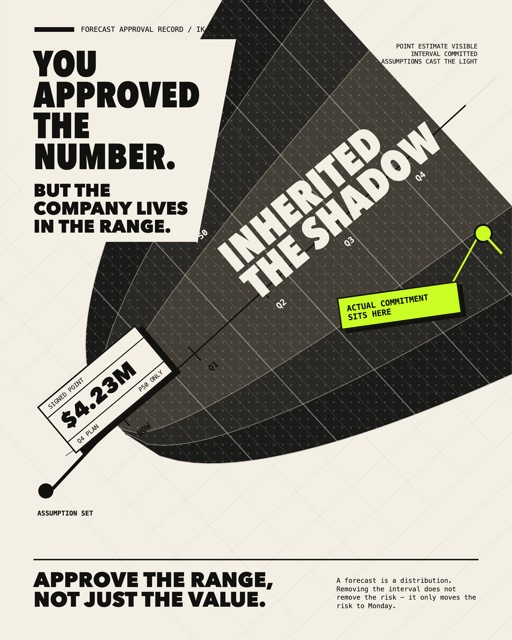
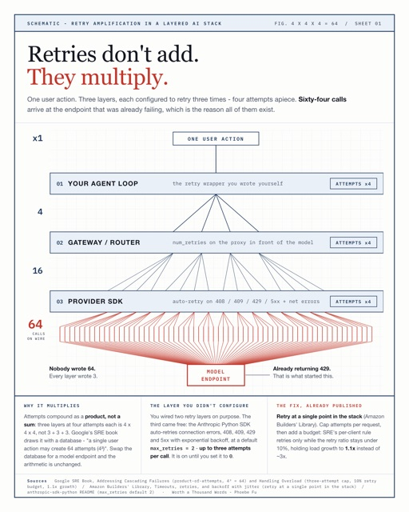
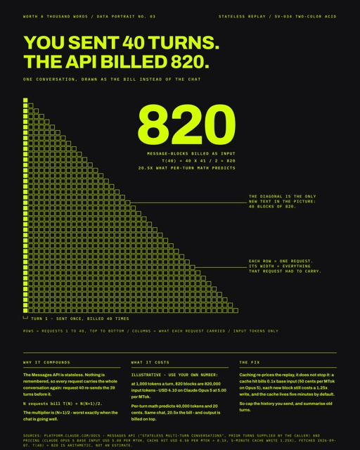
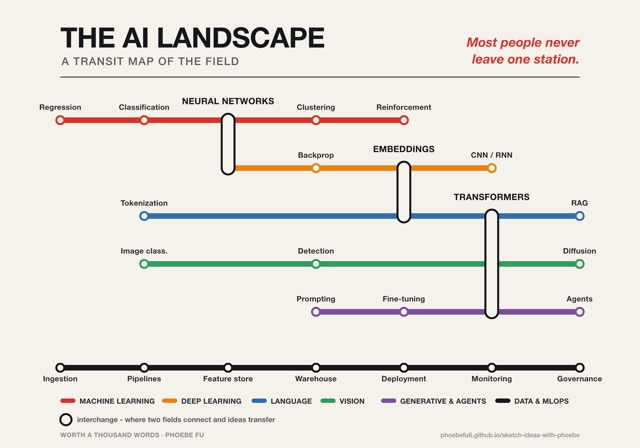
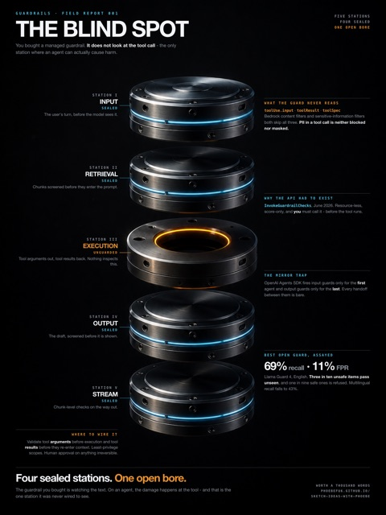
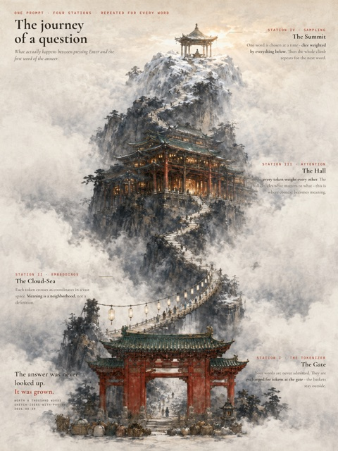
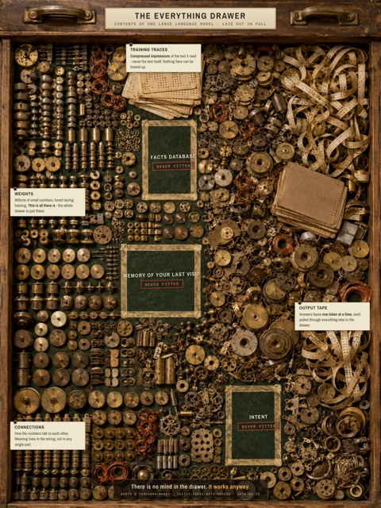
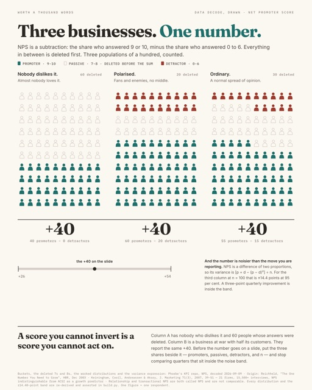
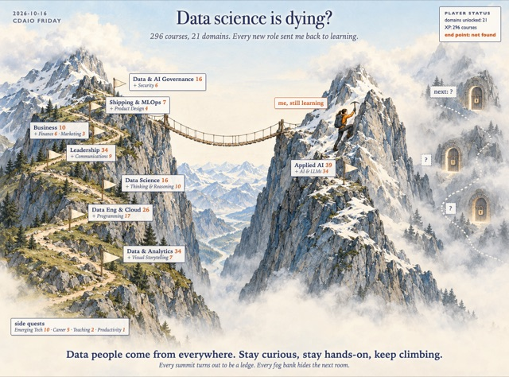

Style Vault
76 visual styles, each a recipe for explaining an idea. Start from who you are talking to, or from the kind of picture you need. 11 styles already have a finished piece of my own; the rest show their palette until their first render.
By audience
Who is in the room decides how loud the picture may be.









By category
The kind of picture: chart, illustration, comic, poster and more.
| Group | Styles | What it is |
|---|---|---|
| Data viz | 17 | Charts, graphs, data maps - marks driven by values. |
| Infographic | 11 | Composite explanatory graphics - data + illustration + hand-set text. |
| Illustration | 33 | Single-image drawn or painted work - editorial, decorative, concept. |
| Storybook | 4 | Narrative picture-book illustration - characters, scenes, warmth. |
| Comic | 2 | Sequential panel storytelling - strips, zines, graphic novels. |
| Typography | 5 | Type as the image - lettering, typographic composition. |
| Graphic design | 14 | Poster, print, editorial layout craft - grids, composition systems. |
| Photography | 20 | Photographic and photo-art registers - lens, light, grade. |
| 3D / Spatial | 7 | 3D render, sculpture, installation, architecture. |
| Craft / Material | 8 | Physical media - paper cut, textile, clay, collage, assemblage. |
| Fine art | 29 | Painting and drawing traditions as the register - ink, oil, charcoal, printmaking. |
| Drawing | 1 | |
| Graphic | 1 | |
| Miniature | 1 | |
| Mural | 1 | |
| Painting | 4 | |
| Surreal | 1 |
Nothing matches that search.